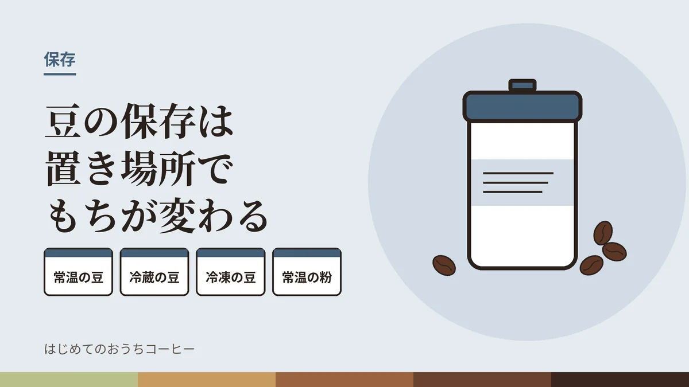

コーヒー豆の保存方法と保存期間の目安｜常温・冷蔵・冷凍と粉の早見表

結論
開封した豆や粉は、不透明な密閉容器に入れ、暗く涼しい場所に置くのが基本です [1]。鮮度の目安は、常温の豆が1〜3週間、常温の粉が1〜2週間、冷凍の豆が3〜4か月です [1]。これらは、開封後に密閉容器へ移した場合に鮮度を保つ期間として示された目安です [1]。安全の期限とは区別して読んでください。まずは下の早見表で、手元の袋に合う行を選んでください。
コーヒー豆を買ったあと、袋のまま戸棚に置くか、容器に移すか、冷凍するかで迷うことがあります。粉なら、袋に書かれた期限まで、開封後もそのまま置いてよいのかも気になります。この記事では、コーヒー豆の保存方法を米国コーヒー協会（NCA）の情報をもとに整理します。保存期間の目安は早見表にまとめ、袋の期限表示との違い、置き場所と容器の決め方、冷凍した豆の取り出し方まで順に説明します。
開封後、密閉容器に移したときの鮮度の目安
- 常温の豆開封後1〜3週間 [1]不透明な密閉容器に移し、暗く涼しい戸棚に置く
- 冷蔵の豆開封後2週間 [1]結露やにおい移りが起こりうる
- 冷凍の豆開封後3〜4か月 [1]一度に取り出すのは1週間分まで
- 常温の粉開封後1〜2週間 [1]豆より短い。一度に買う量を抑える
この記事でわかること
- 豆・粉・冷蔵・冷凍ごとに、鮮度を保つ期間の目安を早見表で確認できる
- 袋の期限表示、開封後の鮮度の目安、買う量の目安を区別して読める
- 冷凍する分を小分けにして、結露する前に残りを戻す段取りを組める
常温・冷蔵・冷凍で何週間もつか：豆と粉の保存期間早見表
コーヒー豆の保存とは、焙煎した豆や粉を、風味を損なう空気・湿気・熱・光から守って保管することです [1]。
| 手元の状態 | 鮮度を保つ目安（NCA） | 置き方と確認点 |
|---|---|---|
| 未開封の豆・粉 | 表示された期限まで [1] | 袋を開けずに置く。保存方法の表示があれば、それに従う |
| 開封した焙煎豆（常温） | 1〜3週間 [1] | 不透明な密閉容器に移し、暗く涼しい戸棚に置く [1] |
| 開封した焙煎豆（冷蔵） | 2週間 [1] | 結露やにおい移りが起こりうる [1]。密閉性の高い容器を使う [1] |
| 開封した焙煎豆（冷凍） | 3〜4か月 [1] | 一度に取り出すのは1週間分まで [1]。結露する前に残りを戻す [1] |
| 開封した粉（常温） | 1〜2週間 [1] | 常温の豆の目安より短い [1]。密閉容器に移し、一度に買う量を抑える [1] |
表のうち開封済みの行の期間は、開封後に密閉容器へ移したことを前提に、NCAが示している鮮度の目安です [1]。NCAによると、多くの焙煎豆は、鮮度のピークを過ぎても、淹れて飲むのが安全でなくなるという意味で期限切れになるわけではありません [1]。ただし、湿気にさらされてカビが生えた場合は別だとしています [1]。そのため表の日数は、飲めるかどうかの線引きではなく、香りや味がどのくらい保たれるかの目安として読みます。袋に保存方法や開封後の扱いが書かれていれば、そちらも合わせて確認します。
買う量については、NCAは焙煎したコーヒーを1〜2週間で使い切れる量ずつ、こまめに買うよう提案しています [1]。焙煎してほぼすぐに鮮度が落ち始めるためです [1]。この期間は、購入量を決める目安として示されています [1]。表に並べた保存条件ごとの鮮度の目安とは、分けて読んでください。
迷ったら、まず「未開封か、開封済みか」で表の行を選びます。開封済みなら、次の買い足しまでに使う分か、しばらく使わない予備かを考えます。普段使う分は常温の行、予備は冷凍の行を見れば、全部を容器に移し替えたり、全部を冷凍したりせずに済みます。
動画で見る：開封後、密閉容器に移したときの鮮度の目安
誤解されやすい3つの点：期限表示、冷蔵庫、古くなった豆
袋の期限は、開封後もそのまま使える日付ではない
NCAの早見表では、未開封の焙煎豆や粉は表示された期限まで鮮度を保つとされています [1]。開封後の豆や粉には、保存条件ごとの期間の目安が別に示されています [1]。そのため当サイトでは、袋に書かれた日付を開封後の目安として読み替えないことを勧めます。
日本の食品の期限表示には消費期限と賞味期限があり、どちらも科学的・合理的な根拠をもって設定することとされています [2]。日本の袋の表示を読むときは、記載された期限の種類と保存方法をセットで確認してください。NCAの表は、未開封品の目安を best-by date（表示された期限）として示しています [1]。この英語表記と日本の袋に印字された日付を、無条件に同じものとして扱わないようにします。
冷蔵・冷凍は、常温より有利とは限らない
コーヒーを冷蔵・冷凍すべきかについては、意見が分かれています [1]。コーヒーは周りの空気から湿気を吸い、においや味も取り込みやすい性質があります [1]。家庭用の保存容器の多くはわずかに酸素を通します [1]。そのため、冷凍庫に長く置いた食品は冷凍焼けすることがあり、冷蔵庫では結露がたまることがあるとNCAは説明しています [1]。NCAは、冷蔵や冷凍がおそらく最も役立つのは、常温では空気中の湿気が問題になりやすい湿度の高い地域だとしています [1]。
そのため、低温だからという理由だけで冷蔵庫を選ぶ必要はありません。当サイトでは、普段使う分は戸棚に置き、すぐには使わない予備だけを冷凍する分け方を提案します。
鮮度の低下と、飲めるかどうかは分けて考える
NCAによると、焙煎豆は時間がたつと品質が落ち、香りが目立って抜けたり、色が薄くなったりすることがあります [1]。淹れると味が乏しく、古い風味がすることがあるとされています [1]。また、湿気にさらされてカビが生えた場合は、安全に飲めるという説明の例外として挙げています [1]。香りや色の変化は、風味を見直す手がかりになります。ただし、カビが見えないことだけで安全とは判断しません。カビなどの異常がある豆は使わず、状態が分からない場合も飲むのは控えてください。
例：同じ棚に開封済みと未開封の袋がある
開封済みの袋から先に使い、未開封の袋は開けずに残しておく。
開封日は容器や袋に書いておき、袋に印字された期限と混同しないようにする。
少しずつ残った別々の豆や粉は、管理しやすくするためだけに混ぜなくてよい。
冷凍した豆の取り出し方と、使うまとまりごとの小分け
冷凍や冷蔵で保存する場合、NCAは密閉性の高い容器を使うよう勧めています [1]。取り出すのは一度に1週間分までとし、手早く取り分けて、コーヒーに結露が生じる前に残りを戻すよう案内しています [1]。ここで示されている量は、まとめ買い全体の保存期間ではなく、容器から一度に取り出す量の上限です [1]。
小分けは、この取り出し方を家庭で実行しやすくするための当サイトの提案です。冷凍前に、使うまとまりごとに密閉できる冷凍用の袋や容器へ分けておけば、必要な袋だけを取り出し、予備を開けずに残せます。NCAが冷凍前の小分け量を直接指定している、という意味ではありません。
冷凍するのは、すぐに開けない予備から
当サイトでは、当面使う分と、すぐには使わない予備を分けて考える方法を提案します。普段使う分は戸棚の密閉容器へ、冷凍する予備は別の密閉容器へ、と分ければ、予備まで毎回開けずに済みます。取り出した小袋をまた冷凍することを前提にせず、使う分だけ取り出せる分け方を考えてください。
NCAが示す冷凍した焙煎豆の鮮度の目安は、開封後に密閉容器へ移した場合で3〜4か月です [1]。管理の工夫として、袋には中身と冷凍した日を書いておくことを提案します。日付で使う順番を決めやすくなり、奥に残った袋にも気づけます。書いた日付は使う順番を決めるためのもので、風味や安全を保証するものではありません。
コーヒーは周りの空気からにおいを取り込みやすい性質があります [1]。当サイトでは、においの強い食品のすぐ隣を避け、口をしっかり閉じられる袋や容器を選ぶことを勧めます。密閉しにくい袋しかなく、取り出すたびに予備まで開けてしまうなら、冷凍にこだわらず、一度に買う量を減らす方法と比べて決めます。
冷凍した豆を室温に戻してから挽くか、凍ったまま挽くかについては、このNCAのページに記述がありません。ミルの取扱説明書に冷凍豆の扱いが書かれていれば、それに従ってください。
戸棚と容器の選び方：不透明・密閉・熱源から離す
置き場所は、暗くて涼しいところを選びます [1]。NCAは避けたい場所として、オーブンや食器洗い機の近くの戸棚と、午後に強い日差しが入る場所を挙げています [1]。どれも温度が上がりやすい場所です [1]。朝は日陰でも午後に日が差す作業台なら、使い終わったら戸棚に戻します。
容器は、ふたを閉めると密閉でき、光を通さないものを選びます [1]。購入時の袋は長期保存向けに作られていないことが多く、密閉容器に移すと鮮度を保ちやすくなります [1]。この効果は、挽いた粉で特に大きいとされています [1]。透明なキャニスターは光を通して味を損なうおそれがあるため、NCAは飾り用にとどめるよう勧めています [1]。手持ちの容器が透明なら、光の入らない戸棚の中で使います。
元の袋の表示を手元に残したいときは、容器に移す前に表示を撮影しておくか、期限と保存方法を容器のラベルに書き写します。
普段使いの容器を大きくしすぎない
大きな容器に全量を移すと、取り出すたびに予備の分まで空気に触れる機会が増えます。普段使う分は小さめの容器に入れて取りやすい場所に置き、予備は別の密閉容器に入れて同じ戸棚の奥に置きます。こうすれば、予備のふたを開けるのは補充するときだけで済みます。
容器を選ぶときは、ふたの閉めやすさと、戸棚に入れたまま手が届くかも確かめます。取り出すたびにほかの物をどかす必要があるなら、少し手前に移しておくと、作業台に出しっぱなしになるのを防げます。豆や粉を取り分けたらすぐにふたを閉めれば、容器が開いている時間も短くなります。
粉の保存期間は豆より短い：挽くタイミングと買う量
NCAの目安では、密閉容器に移した粉の鮮度は常温で1〜2週間です [1]。常温の豆の目安である1〜3週間より短く示されています [1]。買う量については、NCAは別に、1〜2週間で使い切れる量ずつ買うよう提案しています [1]。当サイトでは、粉を買うときはこの購入量の目安に合わせて袋の大きさを選ぶことを提案します。開封後の日数が分からなくならないよう、袋を開けた日も記録しておくと管理しやすくなります。
飲む頻度を見積もるときは、淹れたい回数ではなく、最近実際に家で淹れた日を思い出します。平日は職場で飲むことが多いなら、その分まで見込んで買う必要はありません。家族も同じ粉を使うなら、袋がどのくらいで空くかを一緒に確かめておくと、次に買う量を決めやすくなります。
粉のまま買うか、豆で買って淹れる直前に挽くか
NCAは、豆を適切に保存したうえで、淹れる直前に必要な分だけ挽くと、より新鮮な風味になるとしています [1]。ミルがあり、毎回挽く手間が負担にならないなら、豆で買う方法を選べます。挽き目による味の変わり方はハンドドリップの注ぎ方・挽き目・フィルターによる違いで詳しく説明しています。フレンチプレスで淹れる場合は、フレンチプレスの淹れ方と挽き目の目安も参考にしてください。
ミルがなく、粉のほうが手軽に淹れられる人は、保存のためだけに豆へ切り替えなくてかまいません。小さめの袋を選び、開封した袋を何個も同時に置かないようにするだけでも、粉の短い目安に収めやすくなります。
例：いつもと予定が違うときの調整
週末にしか淹れないなら、開いている粉を先に使い、次の袋は未開封のまま残す。
来客用に多めに買うなら、来客用と普段用の袋を分け、開けなくてよい袋は開けずに保管する。
違う種類を並行して使うと、1袋が減るペースは遅くなる。それぞれの袋を小さめにすることを検討する。
袋を開ける日に決めておく、普段用と予備の分け方
袋を開ける日は、まず期限と保存方法の表示を確認します。密閉容器に移した場合の常温での鮮度の目安は、豆が1〜3週間、粉が1〜2週間です [1]。これとは別に、NCAは一度に買う量の目安として、1〜2週間で使い切れる量を挙げています [1]。当サイトからの提案は、普段使いと予備の分け方を開封時に決めることです。次の買い足しまでに使い切れそうにない分は、密閉して冷凍する方法と、次に買う袋を小さくする方法を比べて選んでください。
普段用の容器に補充するときは、残っている分を使い切ってから足します。古い分の上に新しい分を足し続けると、いつ開けた分なのか分からなくなります。使い切ってから次に移れば、香りが弱くなったと感じたときに、保存期間が長すぎたのか、置き場所を見直すべきなのかを区別しやすくなります。
買う量の見直しは、空になった袋を片づけるときに行います。最後までいつもどおりの風味で使えたなら、次も同じくらいの量で問題ありません。後半に香りが抜けてきたと感じたら、次は袋を小さくするか、予備を冷凍に回します。香りの変化は、期限切れかどうかの判定ではなく、次に買う量や置き場所を調整する手がかりとして使います。
チェックリスト
- 未開封の袋は、期限と保存方法をセットで確認する
- 容器に移す前に、元の袋の表示を撮影するか書き写す
- 開封日を、袋の期限とは区別して記録する
- 普段使いは不透明な密閉容器に入れ、オーブン・食器洗い機・午後に強い日差しが入る場所から離れた戸棚に置く [1]
- 豆や粉を取り分けたら、すぐに容器のふたを閉める
- 冷凍した豆から取り出すのは一度に1週間分までとし、結露する前に残りを戻す [1]
- 開いている容器の分を使い切ってから、次の分を補充する
- 粉が余りがちなら、次は一度に買う量を減らす
よくある質問
コーヒー豆は開封後、どのくらい保存できますか？
NCAの鮮度の目安は、密閉容器に移した焙煎豆の場合、常温で1〜3週間、冷蔵で2週間、冷凍で3〜4か月です。いずれも鮮度を保つ期間として示された目安です。当サイトでは、この期間を飲めるかどうかの期限とは別のものとして扱います。保存状態や、袋に書かれた開封後の案内も合わせて確認してください。
コーヒー豆は買った袋のまま冷凍できますか？
NCAは、購入時の袋は長期保存向けでないことが多いとしており、冷凍するなら密閉性の高い容器を使うよう勧めています。当サイトの提案として、口を密閉しにくい袋なら、使う単位ごとに冷凍用の袋や容器へ小分けしておく方法があります。取り出すときに、残りの豆を台所の空気にさらす機会を減らしやすくなります。
粉の袋に書かれた期限を、開封後の目安にしてよいですか？
NCAの表で、表示期限までとされているのは未開封の場合です。開封して密閉容器に移した粉は、常温で1〜2週間が鮮度の目安です。開封後も袋の日付まで同じ風味が続くとは考えず、余りがちなら次は小さな袋に変えてみましょう。
コーヒー豆には専用の保存容器が必要ですか？
NCAが容器の条件として挙げているのは、密閉できることと光を通さないことです。当サイトでは、専用品かどうかより、この2点を満たすかどうかで選ぶことを勧めます。NCAは、透明なキャニスターは光を通すため、飾り用にとどめるよう勧めています。手持ちが透明な容器なら、光の入らない戸棚の中で使ってください。
古くなったコーヒー豆は飲めますか？
NCAは、多くの焙煎豆は、湿気にさらされてカビが生えた場合を除き、鮮度のピークを過ぎても、淹れて飲むのが安全でなくなるという意味で期限切れになるわけではないとしています。一方で、香りや味は落ちると説明しています。見た目や香りだけで飲めると決めず、カビなどの異常がある豆や、保存状態が分からない豆は使わないようにしてください。袋にある期限表示については、消費者庁の案内も確認できます。
次の一歩
手元の豆か粉の袋を取り出し、表示を確認して、早見表のどの行に当てはまるかを確かめてください。次の買い足しまでに使い切れない分があれば、小分けにして冷凍するかどうかを決めましょう。
出典・参考にした情報
確認日：2026年11月26日（出典ページを自動で取得し、本文と照合）。情報は変わることがあるため、最新の内容は各出典で確認してください。